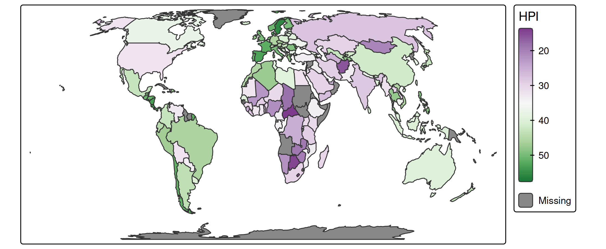
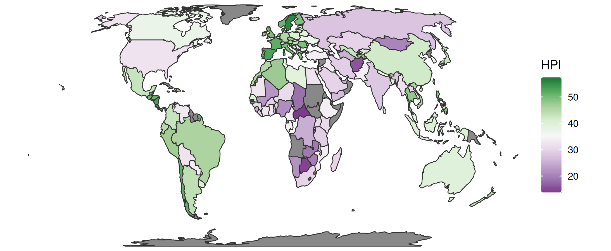

Choropleth Map comparision
An example of how the default output of tmap compares with ggplot2.
This is the default output of ggplot2:
library(ggplot2)
library(cols4all)
ggplot(World) +
geom_sf(aes(fill = HPI), color = "grey20", linewidth = .4) +
scale_fill_continuous_c4a_div("pu_gn", mid = 35) +
coord_sf(crs = "+proj=eqearth") +
theme_void()
This is the default output of tmap:
tm_shape(World, crs = "+proj=eqearth") +
tm_polygons(fill = "HPI",
col = "grey20",
lwd = 1,
fill.scale = tm_scale_continuous(values = "pu_gn", midpoint = 35))
#> [plot mode] fit legend/component: Some legend items or map compoments do not
#> fit well, and are therefore rescaled.
#> ℹ Set the tmap option `component.autoscale = FALSE` to disable rescaling.
Note the different line width values:
-
linewidth = .4inggplot2 -
lwd = 1intmap
The unit of a line width is different. tmap follows the lwd parameter (see graphics::par) whereas in ggplot2 linewidth = 1 equals roughly 0.75 due to a historical error.
Mimicking ggplot2 layout
We can use tmap to match the style of ggplot2:
tm_shape(World, crs = "+proj=eqearth") +
tm_polygons(
fill = "HPI",
col = "grey20",
lwd = 1,
fill.scale = tm_scale_continuous(values = "pu_gn", midpoint = 35),
fill.legend = tm_legend(reverse = TRUE,
frame = FALSE,
item.height = 2.25,
item.width = 1.8,
position = tm_pos_out(pos.v = "center"),
na.show = FALSE,
ticks = list(c(0, 0.1), c(0.9, 1)),
ticks.col = "white",
col = "white")) +
tm_layout(frame = FALSE, outer.margins = 0)